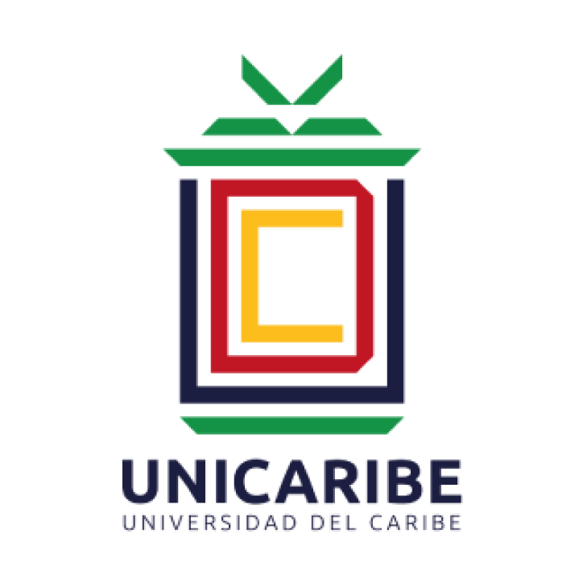

IDEA CENTRAL
Que el ingreso alcance para la vida real.

Ficha del proyecto
UniversidadUniversidad del Caribe (UNICARIBE)
CarreraComunicación Digital
AsignaturaMetodología del Discurso Escrito y Oral
Tema de la fichaEconomía familiar y costo de vida
EnfoqueInflación, salarios y poder adquisitivo de hogares trabajadores de la provincia de San Juan
Sustentantes e IDFanuel Mesa · A00164410
Ian Rosario · A00162192
Cesibel De Jesús · A100169892
Ian Rosario · A00162192
Cesibel De Jesús · A100169892
DocenteSergio Elías Meregildo Rodríguez
Lugar y fechaSanto Domingo, República Dominicana · septiembre de 2026
El proyecto en un minuto
Laura Méndez, abogada nacida en San Juan de la Maguana y aspirante al Senado por San Juan, presenta Alcanza RD: un plan piloto para proteger el poder adquisitivo de hogares trabajadores de ingresos bajos y medios en la provincia. La propuesta combina información verificable sobre gastos esenciales, apoyo temporal y focalizado durante aumentos extraordinarios en alimentos o transporte, y una mesa de diálogo sobre salarios e ingresos. Cada medida dependería de presupuesto, criterios públicos y evaluación. El plan de comunicación explica qué puede hacer una política pública, qué todavía requiere estudio y cómo escuchar a las familias.